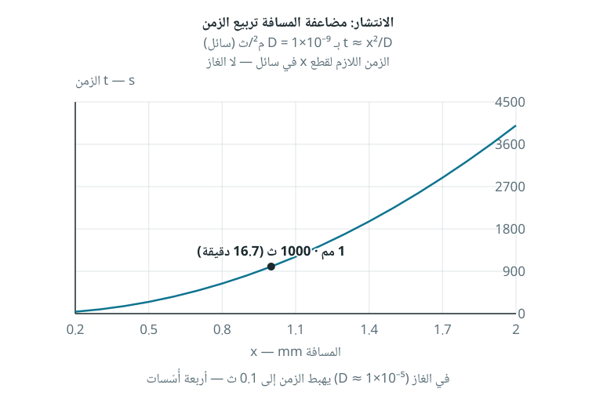

قانون فيك للانتشار
Fick's law of diffusion
قانون فيك الأول ينص أن تدفق المادة المنتشرة يتناسب مع تدرّج التركيز: J = −D·(dc/dx). والإشارة السالبة تعني أن الانتشار يحدث من التركيز الأعلى إلى الأدنى. ومعامل الانتشار D بوحدة m²/s. والغازات في الهواء لها D نحو 10⁻⁵ m²/s، والسوائل نحو 10⁻⁹، والمواد الصلبة أقل بكثير.
الانتشار هو حركة الجزيئات العشوائية التي تؤدي إلى تسوية التركيز مع الزمن. وقانون فيك يصف معدل هذه التسوية: كلما كان التدرّج أشدّ كان التدفق أكبر. وهو مشابه لقانون فورييه للتوصيل الحراري وقانون أوم للكهرباء، لأن الآلية رياضياً واحدة: تدفق يتناسب مع تدرّج. مثال: ملح بتركيز 1.0 mol/m³ على مسافة 1.0 mm من ماء نقي، وD = 1.0×10⁻⁹ m²/s: J = −1.0×10⁻⁹×(0 − 1.0)/1.0×10⁻³ = 1.0×10⁻⁶ mol/(m²·s).
كيف تعمل الظاهرة؟
الجزيئات في حركة حرارية عشوائية مستمرة، فكل جزيء يتحرك في مسار متعرّج. وعندما يوجد تدرّج في التركيز ينتقل من المنطقة عالية التركيز إلى المنخفضة جزيئات أكثر مما ينتقل في الاتجاه المعاكس، لأن عدد الجزيئات هناك أكبر. والمحصلة تدفق صافٍ نحو التركيز المنخفض. ولهذا لا يحتاج الانتشار قوة دافعة خارجية، بل يكفيه التدرّج، وهو عملية لا عكوسة تزيد الإنتروبيا.
العلاقة بالأرقام
J = −D·dc/dx، و∂c/∂t = D·∂²c/∂x². وزمن الانتشار المميز t ≈ L²/D، أي أن المسافة تتناسب مع الجذر التربيعي للزمن. مثال: الانتشار على 1 mm في الماء يستغرق 1000 s، وعلى 1 cm يستغرق 100000 s = 27.8 ساعة، وعلى 1 m يستغرق 10⁹ s = 31.7 سنة. ولهذا لا يكفي الانتشار وحده لنقل المواد في المسافات الكبيرة، ويُستعان بالحمل.
مفاهيم متقاربة
يُفرَّق بين قانون فيك وقانون فورييه: الأول لانتشار الكتلة والثاني للحرارة، وكلاهما تدفق يتناسب مع تدرّج. ويُفرَّق بين الانتشار والحمل: الأول حركة جزيئية بلا تدفق ظاهري، والثاني حركة جماعية للمائع. ويُفرَّق بين D واللزوجة الحركية ν: كلتاهما m²/s، ونسبتهما عدد شميدت. وأخيراً يُفرَّد بين الانتشار الجزيئي والهجرة الكهربائية، حيث تنتقل الأيونات تحت مجال كهربائي لا تدرّج تركيز.
حدود التطبيق
قانون فيك لا يصف الانتشار في الأوساط المسامية بلا تصحيح المسامية والالتواء. ولا يصف المحاليل المركزة حيث يعتمد D على التركيز. ولا يصف الانتشار في المواد الصلبة بلا آلية محددة، حيث يحدث عبر الشواغر أو الحدود الحبيبية. ولا يصف الأيونات في مجال كهربائي، حيث تُضاف الهجرة. وأخيراً لا يصف الانتشار في الأغشية حيث تظهر قوى تفاعل مع المادة.

| الكمية | القيمة | المصدر |
|---|---|---|
| معامل انتشار الغازات في الهواء | 1×10⁻⁵ m²/s | [1] |
| معامل انتشار السوائل | 1×10⁻⁹ m²/s | [1] |
| زمن الانتشار على 1 mm | 1000 s | [1] |
المصادر
- 1 Water - Dynamic and Kinematic Viscosity at Various Temperatures and Pressures — The Engineering ToolBox (2026). www.engineeringtoolbox.com/water-dynamic-kinematic-viscosity-d_596.html · اطُّلع عليه 2026-11-22
- 2 CODATA Value: Boltzmann constant — NIST — CODATA 2022 recommended values (2024). physics.nist.gov/cgi-bin/cuu/Value?k · اطُّلع عليه 2026-11-22
استشهد بهذا المصطلح
الصيغتان مبنيتان من بيانات الصفحة نفسها: العنوان والتاريخ ورابط النسخة المنشورة.
قانون فيك للانتشار — Fick's law of diffusion. (2026). ديوان المعرفة — انفراد. https://infiradev.com/diwan/terms/term-ficks-law.html
@misc{term-ficks-law2026,
title = {قانون فيك للانتشار},
titleaddon = {Fick's law of diffusion},
howpublished = {{ديوان المعرفة — انفراد} — مرجع علمي عربي},
year = {2026},
url = {https://infiradev.com/diwan/terms/term-ficks-law.html},
urldate = {2026-11-22},
note = {مراجعة علمية: تحرير انفراد الآلي — نُشر بأمر عبدالله الهويدي}
}
راجعه: تحرير انفراد الآلي — نُشر بأمر عبدالله الهويدي · 2026-11-22 · آخر تحديث 2026-11-22